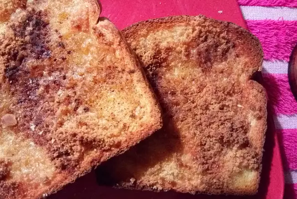

Toast

Description
Yummy cinnamon toast makes a great breakfast meal or a snack!
Ingredients
- 2 slices white bread
- 2 teaspoons butter or margarine
- 2 tablespoons white sugar
- 1 teaspoon ground cinnamon
Steps
- Use a toaster to toast the bread to desired darkness. Spread butter or margarine onto one side of each slice. In a cup
or small bowl, stir together the sugar and cinnamon; sprinkle generously over hot buttered toast.